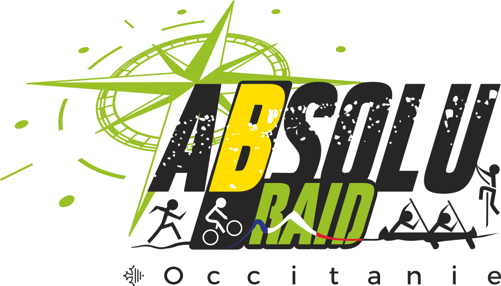

GeVT 
Contents:
About
Installer GeVT
Utilisation
Démarrage
Importation
Édition
Affecter
GeVT
Docs
»
Utilisation
View page source
Utilisation
¶
Cette section décrit le fonctionnement global de l’application.
Contents:
Démarrage
Créer un nouvel événement
Remplir un événement
Importation
Importer un fichier tâches
Importer un fichier bénévole
Édition
Edition manuelle
Importation fichier CSV
Affecter
Affecter des taĉhes à un volontaire
Affecter des volontaires à une tâche